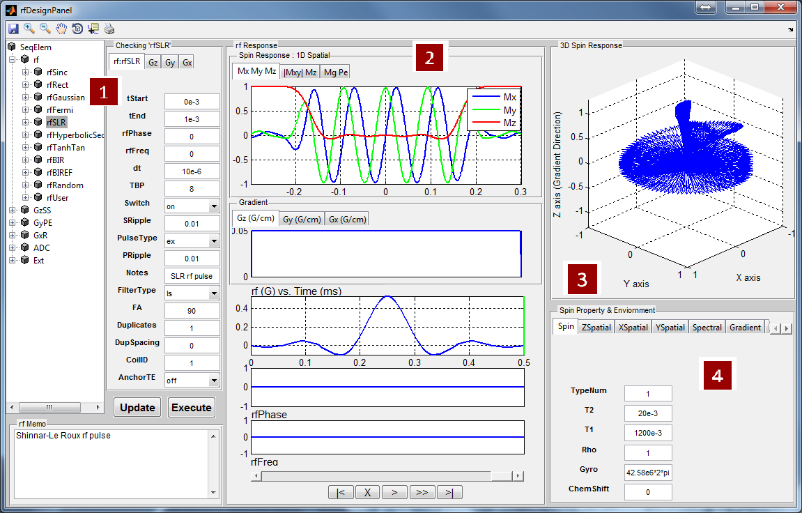

Figure 5.1: RF Design Panel Toolbar Icon
MRiLab toolboxes consists of several individual GUIs for conducting design task for RF pulse, MR sequence and Coil etc. These toolboxes allow to build and customize project specific MR simulation experiment. This chapter covers the introduction to each toolbox and corresponding macro libraries.
The RF pulse design toolbox can be activated by pressing ‘RF Design Panel’ toolbar icon located at the top of the main simulation console.

Figure 5.2 demonstrates an overview of the RF Pulse Design interface. This interface consists of
The user can use this interface to analyze tissue spin response regarding a selected RF and gradient pulse. To select a RF pulse macro, the user needs to click the macro library tree to unfold the tree structure, and then click a desired RF macro. The properties of the chosen RF macro will show on the left panel under ‘rf:rf name’ tab. The RF memo information is also shown at the ‘rf Memo’ panel below the tree structure. The user can press ‘Execute’ button to start analysis process. MRiLab supports three analysis modes for analyzing 1D spatial RF pulse, 2D spatial RF pulse and Spatial-Spectral RF pulse:
MRiLab assumes a gradient is applied in the Z direction, therefore a constant gradient will be applied if ‘Gz’ tab is empty (Figure 5.3). To select a ‘Gz’ gradient, the user needs to choose a gradient macro under ‘GzSS’. For example, the ‘GzSelective’ is a recommended gradient macro typically used for performing slice selection in MRiLab. Once the user selected a gradient macro, the ‘Gz:gradient name’ tab will become activated and the properties of this gradient macro become accessible and editable. The user can modify macro attributes to meet design goals. To make any modification effective, the user must press ‘Update’ button before executing the slice profile analysis. Although the library tree contains macros for another gradient line (e.g. GyPE, GxR), they are typically ignored in this mode.
MRiLab assumes a gradient is applied in both the X and Y directions, a constant gradient will be applied if ‘Gx’ tab or ‘Gy’ tab is empty. The user can choose any Gx and Gy gradient macros for these two tabs and modify macro attributes to satisfy 2D RF pulse design. To activate 2D pulse analysis, the ‘Spat_Flag’ under ‘XSpatial’ tab has to be turned on (4c). The Gz gradient is typically ignored under this mode.
MRiLab assumes a gradient is applied in the Z direction, a constant gradient will be applied if ‘Gz’ tab is empty. The user can choose any Gz gradient macros for this tab and modify macro attributes to satisfy Spatial-Spectral pulse design. The user can also modify the frequency range and resolution under ‘Spectral’ tab (4e). To activate Spatial-Spectral pulse analysis, the ‘Freq_Flag’ has to be turned on (4e). The Gx and Gy gradient are typically ignored under this mode.
Under 1D Spatial Mode, MRiLab provides three slice profile figures (Figure 5.4) on the ‘Spin Response’ panel under different tabs. These figures include slice profile regarding
The horizontal axis is the spin position in units of meters, and the vertical axis
is the value of the components in normalized units.
Under 2D Spatial or Spatial-Spectral Mode, MRiLab provides five spin response figures on the ‘Spin Response’ panel under different tabs. These figures include
The horizontal axis is the spin position for 2D Spatial mode and the frequency range for Spatial-Spectral mode, and the vertical axis is the spin location in both mode. Notice the units of both axes use spin index for either spatial position or frequency position according to spin property and environment (4c, 4d and 4e).
MRiLab also plots the RF and gradient waveform. In MRiLab, the property of a RF pulse contains RF amplitude (T), RF phase (rad) and RF frequency (Hz). The RF frequency is defined as the spin Larmor frequency minus the laboratory frequency of the RF pulse. Notice that in those figures, for display purpose, the gradient amplitude is in units of G/cm and RF amplitude is in units of G. Both time axes are in units of milliseconds. At the bottom of this interface, there is a group of pushbuttons (Figure 5.5) allowing the user to investigate intermediate spin response during a applied RF and gradient (Figure 5.6).
MRiLab renders 3D spin response in ‘3D Spin Response’ panel based on different modes. The user can inspect the behavior of spins at specific location under a chosen RF pulse and gradient. The user can use Matlab default graphical tools for interactively changing display view and size (Figure 5.8). To change three-dimensional spin response content reflecting different tabs in 2D spatial mode or Spatial-Spectral model (Figure 5.7), the trick is to simply activate any item of the playback control group (e.g. click the scroll bar).

The user can modify spin properties and environment to satisfy specific experiment design. The editable properties provided in this interface include:
Figure 5.9 demonstrates a slice profile for two different spin species under the same RF pulse and gradient in 1D spatial mode. To enable slice profile analysis for multiple spin species, the user needs to provide multiple values for T1, T2, Rho and ChemShift in an array, and give the correct number of spin species. The values must be separated with space. For example
MRiLab uses a concept of macros to simplify experiment design. A RF macro is a predefined module for one type of RF pulse which allows flexible programming-free modification for specific experimental design. MRiLab RF macro library is a collection of RF macros covering from simple RF pulses such as hard pulse, to complex RF pulses such as adiabatic pulses. A specific RF macro to interact with external RF pulse file is also provided to create more extensible pulse design environment. This section will give an introduction to each of the RF macros provided in MRiLab.
A RF macro that creates a Sinc type RF pulse. This macro contains attributes including:
The time dependence of the Sinc RF pulse is given by [6]:
| (5.1) |
where is the peak RF amplitude automatically calculated and scaled according to flip angle, is one-half the width of the central lobe, and the and are the number of zero-crossings to the left and right of the central peak, respectively. In MRiLab, the , thus the Sinc RF pulse is always symmetric. Notice that the The time bandwidth product of a Sinc pulse equals the number of zero-crossings including the start and end. In order to address the discontinuity at the start and end, apodization can be applied using ‘Hamming’ or ‘Hanning’ window as described by:
| (5.2) |
where equals and . Hamming window uses , and Hanning window uses . If ‘Non’ is used, apodization is disabled.
A RF macro that creates a hard RF pulse. This macro contains attributes including:
The time dependence of the hard RF pulse is given by [6]:
| (5.3) |
where is the peak RF amplitude automatically calculated and scaled according to flip angle, is the width of RF pulse that equals tEnd-tStart.
A RF macro that creates a Gaussian type RF pulse. This macro contains attributes including:
The time dependence of the Gaussian RF pulse is given by [6]:
| (5.4) |
where is the peak RF amplitude automatically calculated and scaled according to flip angle, is linearly proportional to the pulse width. Also the Gaussian RF pulse is terminated with a 60-dB attenuation.
A RF macro that creates a Fermi RF pulse. This macro contains attributes including:
The time dependence of the Fermi RF pulse is given by [6]:
| (5.5) |
where is the peak RF amplitude automatically calculated and scaled according to flip angle, is a measure of the pulse width that corresponds to PW, is a measure of the transition width. The Fermi pulse approximates more to a rectangle pulse with larger value. Also the Fermi RF pulse is terminated with a 60-dB attenuation.
A RF macro that creates a RF pulse using Shinnar-Le Roux algorithm. This macro contains attributes including:
MRiLab implements a library of Matlab SLR pulse design routines, originally developed by Prof. John Pauly and published online at http://rsl.stanford.edu/research/software.html. Thorough explanation of the algorithm is beyond the scope of this manual, users who are interested in the SLR algorithm are referred to literature [6, 7].
A RF macro that creates an adiabatic inversion RF pulse based on hyperbolic secant modulation. This macro contains attributes including:
The time dependence of the hyperbolic secant RF pulse is given by [6]:
| (5.6) |
where is the maximum B1 field corresponding to MaxB1, is a dimensionless adiabatic factor corresponding to Adiab, is an modulation angular frequency. It can be shown that TBP has the relationship with and as
| (5.7) |
where is the pulse width.
To satisfy the Adiabatic Condition, the parameter setting has to meet
| (5.8) |
A RF macro that creates an adiabatic inversion RF pulse based on tanh/tan modulation. This macro contains attributes including:
The tanh/tan RF pulse is constructed from an adiabatic half passage and its time-reversed adiabatic half passage. The time dependence of the first adiabatic half passage is given by [8]:
| (5.9) |
where is the maximum B1 field corresponding to MaxB1, , , is the pulse width. The TBP can be estimated using
| (5.10) |
A RF macro that creates an adiabatic B1 Independent Rotation (BIR) RF pulse. This macro contains attributes including:
The time dependence of the BIR-1 RF pulse is given by [6]:
Amplitude modulation:
| (5.11) |
Frequency modulation:
| (5.12) |
where
is the maximum B1 field corresponding to MaxB1,
is the
maximum RF frequency corresponding to MaxFreq. The RF pulse width is
, and
and
are
unit vectors for indicating RF phase.
The time dependence of the BIR-2 RF pulse is given by [6]:
Amplitude modulation:
| (5.13) |
Frequency modulation:
| (5.14) |
where
is the maximum B1 field corresponding to MaxB1,
is the
maximum RF frequency corresponding to MaxFreq. The RF pulse width is
, and
and
are
unit vectors for indicating RF phase.
The time dependence of the BIR-4 RF pulse is given by [6]:
Amplitude modulation:
| (5.15) |
Frequency modulation:
| (5.16) |
where is the maximum B1 field corresponding to MaxB1. The RF pulse width is . The and are dimensionless constants that describe the degree to which extent the RF pulse satisfies the adiabatic condition.
A RF macro that creates an adiabatic B1 Independent Refocusing (BIREF) RF pulse. This macro contains attributes including:
The time dependence of the BIREF-1 RF pulse is given by [6]:
Amplitude modulation:
| (5.17) |
Frequency modulation:
| (5.18) |
where
is the maximum B1 field corresponding to MaxB1,
is the
maximum RF frequency corresponding to MaxFreq. The RF pulse width is
, and
is an unit vector for indicating RF phase along the
axis.
The time dependence of the BIREF-2a RF pulse is given by [6]:
Amplitude modulation:
| (5.19) |
Frequency modulation:
| (5.20) |
where
is the maximum B1 field corresponding to MaxB1,
is the
maximum RF frequency corresponding to MaxFreq. The RF pulse width is
, and
is an unit vector for indicating RF phase along the
axis.
The time dependence of the BIREF-2b RF pulse is given by [6]:
Amplitude modulation:
| (5.21) |
Frequency modulation:
| (5.22) |
where
is the maximum B1 field corresponding to MaxB1,
is the
maximum RF frequency corresponding to MaxFreq. The RF pulse width is
, and
is an unit vector for indicating RF phase along the
axis.
A RF macro that creates a RF pulse with normally distributed pseudo-random amplitude. This macro is used for program testing purpose, however it shows that almost any arbitrary RF pulse could potentially be supported by MRiLab. This macro contains attributes including:
If the user has specific RF pulse waveform data saved in a MAT file, the user can easily import the RF file into MRiLab pulse design interface by using ‘rfUser’ macro. The RF pulse MAT file needs to contain four matrices including ‘rfTime’ (i.e. RF time points) , ‘rfAmp’ (i.e. RF amplitude), ‘rfPhase’ (i.e. RF phase) and ‘rfFreq’ (i.e. RF frequency). All four matrices must have the same size of m-by-n, where m is the number of TR sections and n is the number of RF waveform points. In typical MR sequence, the entire sequence is composed of multiple TR sections. The th TR section uses the th RF pulse stored in the th row of these four matrices. If the number of row is less than the number of TR sections, the last RF pulse will be used for all the remaining TR sections. Notice that if ‘rfPhase’ and/or ‘rfFreq’ are not provided, MRiLab initializes them as a value of 0. However, ‘rfTime’ and ‘rfAmp’ must be provided. Also note that MRiLab only uses the first RF pulse in the MAT file for pulse analysis in the RF pulse design interface. The ‘rfUser’ macro contains attributes including:
The RF pulse macro library covers several common types of RF pulse waveform. However, comprehensive coverage of existing RF pulses is nearly impossible for almost any pulse sequence design tools. To address this problem in MRiLab, the user can use the ‘rfUser’ to import RF pulses from files generated by other programs. Another way to import RF pulse is to simply write a RF macro. To create a RF macro, the user should follow the following steps :
It is strongly recommended to write your own RF macro code based on similar RF macros in the MRiLab macro library, for example, the ‘rfRect’ macro is coded as:
Your macro must start from a function declaration at the beginning, then followed by attribute input section. The ‘tStart’ and ‘tEnd’ need to be added for indicating the time scale. It’s also strongly recommended to add attribute input ‘rfCoil’,‘Duplicates’ and ‘DupSpacing’ for multi-transmitting and multi-echo support.
The main code should deal with calculation for ‘rfAmp’, ‘rfPhase’, ‘rfFreq’ and ‘rfTime’. Notice that they should have the same size as 1-by-m where m is the number of RF waveform points.
Then you should add several lines to end your macro,
The RF macro file can be placed anywhere as long as the file is included in Matlab search path, however it is recommended to save the file under /MRiLab/Macro/SeqElem/rf for consistent file organization. Besides a RF macro file that performs pulse generation, MRiLab also requires a memo .txt file that accompanies the RF macro with the name ‘rfMacroName_Memo’. This file contains information about RF pulse description if necessary.
The customized RF macro needs to be registered in the macro library before using. To register a macro, open file ‘SeqElem.xml’ under /SeqElem, then add one entry under rf category with the proper attribute list. One example could be
Notice that in the above example, the first 7 attributes are required for MRiLab, The remaining attributes are optional based on user’s choice.
Once the RF macro is coded and registered to the library, the user can use this customized RF macro just like default RF macros in the library.
The MR Sequence Design toolbox can be activated by pressing ‘Sequence Design Panel’ toolbar icon located at the top of the main simulation console. The current loaded sequence will show in the MR Sequence Design interface.
Figure 5.11 demonstrates an overview of the MR Sequence Design interface. This interface consists of
The Macro Library contains a full set of pulse macros for constructing MR sequence in MRiLab. It covers not only RF macro library as described in above section, but also GzSS, GyPE and GxR gradient macro library, ADC macro library and Ext macro library. The user needs to click the ‘SeqElem’ root as well as the subsequent nodes to unfold those macros.
In MRiLab, a MR sequence consists of the following parts :
The user can construct desired MR sequence by changing the content of the
MR sequence structure. To add a macro into the sequence structure, click one
macro in the macro library, then click on the sequence line root (e.g. rf) to
which this macro is inserted, then click ‘+’ macro operation button. To delete
a macro from the sequence structure, click the unwanted macro at
the sequence line, then click ‘-’ macro operation button. To duplicate
an existing macro, first click the source macro, then click ‘C’ macro
operation button for copying, click on the sequence line root, then
click ‘P’ macro operation button for pasting. MRiLab requires the
pulse macro being operated within its belonging category (e.g. RF
pulse can’t be added to gradient line). Also empty sequence line is
prohibited.
In MRiLab v1.2 and v1.3, multiple ‘Pulses’ are allowed in a single sequence
structure to enhance design ability for complex MR sequence. For instance,
two ‘Pulses’ can be used to design a MR sequence with two separate
sections where one section is for regular image acquisition and the other
is for fat saturation which occurrs every 5 regular image acquisition
sections (Figure 5.14). To add a new ‘Pulses’, click one ‘Pulses’ as a
source, then click ‘C’ macro operation button for copying, click on the
sequence root ‘MRiLabSeq’, then click ‘P’ macro operation button for
pasting. The duplicated ‘Pulses’ will be appended to the end of the
sequence structure, from where further modification could be made. Also,
removing a selected ‘Pulses’ can be performed by clicking ‘-’ operation.
The ‘Pulses’ has several properties:
Upon clicking on a pulse macro within a MR sequence structure, the corresponding macro attributes will be shown at the pulse attribute panel down below the sequence structure. The user can edit those attributes to modify the sequence waveform. To make any modification effective, the user must press ‘Update’ button to update the associated sequence XML file. Pressing ‘Execute’ button will update and redraw the MR sequence waveform plotting on this interface.
The sequence waveform associated with the sequence structure is displayed on
the ‘Sequence Diagram’ panel on the right side of this interface. The user can
use the waveform diagram to inspect sequence details and layout. The sequence
diagram consists of individual sequence lines corresponding to RF, GzSS,
GyPE, GxR, ADC and Ext, respectively. To accommodate multiple RF
transmitting, MRiLab provides separate RF sequence lines for each RF source.
When ‘MultiTransmit’ flag is turned on in the main control console and the
chosen sequence structure contains multiple RF pulses for different RF sources
(i.e. assign RF pulses to different coil channels by using ‘CoilID’ attribute),
the multi-tab will be activated on the ‘rf Source’ panel (Figure 5.15).
The user can switch between these tabs for checking individual RF
source.

Notice that the vertical axes for all sequence lines are normalized and the horizontal axes are in units of milliseconds. MRiLab provides a group of sequence display button (Figure 5.16) to help inspect the sequence waveform details.
The sequence display button group consists of :
The user can use the ‘Checker’ toggle button to display a sequence waveform at any arbitrary time interval (Figure 5.17). First press the ‘Checker’ button, move the mouse cursor into the axes. Notice that the mouse cursor changes to a cross-hair. Move the cross-hair in the axes, the amplitude value for each sequence line will be displayed accordingly on right side of each line with their default units. The user can click on the axes to choose one side of the time slot, then click on the another side. MRiLab will change the sequence view between the chosen time points, and also save time point information in the list at the bottom of this interface. To disable ‘Checker’ function, simple press this button again.
The ‘Waveform’ tab on the ‘Sequence Display’ contains parameters for controlling sequence wavefrom display.
The ‘KSpace’ tab on the ‘Sequence Display’ contains parameters for controlling k-space trajectory rendering.
Notice that in VTK rendering, the k-space line color starts from green and ends to red. If the user uses VTK for k-space rendering, please press keyboard ‘q’ to quit the VTK window before any subsequent simulation. Pressing the quit button on the VTK window under Linux system will force the entire Matlab to close, this is ‘believed’ to be a compatibility bug between Matlab and OpenGL used by VTK.
For the convenience of transferring data and configuration information across different modules, MRiLab defined several Matlab structure variables in the global scope. These structures start with ‘V’ standing for ‘Virtual Structure’. Understanding what these structures are and how they work is important to work with MRiLab and to customize specific experiment design. There are two virtual structures useful for designing MR sequences.
The user can use the loop index variables in VVar
For example, to create RF phase cycling in bSSFP sequence, the user can set the attributes for the excitation RF pulse as
A GzSS macro is a predefined module for a gradient pulse on the GzSS sequence line. MRiLab GzSS macro library is a collection of GzSS macros covering different gradient pulse types including slice selection and slice phase encoding pulses. Notice that by default the area under the gradient ramp is ignored when calculating k-space. This section will give an introduction to each of the GzSS macros provided in MRiLab.
A GzSS macro that creates a typical slice selective gradient pulse (Figure 5.20). This macro contains attributes including:
Notice that both the prephasing gradient and rephasing gradient have half of the area of the slice selection gradient.
A GzSS macro that creates a slice selective gradient pulse straddled with crusher gradient (Figure 5.21). This macro contains attributes including:
A GzSS macro that creates a trapezoid gradient pulse (Figure 5.22) on GzSS sequence line. This macro contains attributes including:
A GzSS macro that creates a trapezoid gradient pulse of specified area (Figure 5.23) on GzSS sequence line. This macro contains attributes including:
A GzSS macro that creates a trapezoid gradient pulse of specified area with highest system performance (Figure 5.24) on GzSS sequence line. This macro creates a gradient pulse with nearly shortest pulse width for the given system hardware constraint. This macro contains attributes including:
A GzSS macro that creates a Cartesian phase encoding gradient pulse (Figure 5.25) along the slice direction. This macro contains attributes including:
Notice that the phase encoding gradient and the rephasing gradient have the same area that is automatically calculated based on the imaging parameters in the main control console.
If the user has gradient pulse data saved in a MAT file, the user can easily import the gradient file into MRiLab by using ‘GzUser’ macro. The gradient pulse MAT file needs to contain two matrices including ‘GTime’ (i.e. gradient time points) and ‘GAmp’ (i.e. gradient amplitude). Both matrices must have the same size of m-by-n, where m is the number of TR sections and n is the number of gradient waveform points. In typical MR sequence, the entire sequence is composed of multiple TR sections. The th TR section uses the th gradient pulse stored in the th row of these two matrices. If the number of row is less than the number of TR sections, the last gradient pulse will be used for all the remaining TR sections. The ‘GzUser’ macro contains attributes including:
A GyPE macro is a predefined module for a gradient pulse on the GyPE sequence line. MRiLab GyPE macro library is a collection of GyPE macros covering different gradient pulse types for performing phase encoding. Notice that by default the area under the gradient ramp is ignored. This section will give an introduction to each of the GyPE macros provided in MRiLab.
Similar to GzTrapezoid (Figure 5.22), GyTrapezoid creates a trapezoid gradient pulse on GyPE sequence line. This macro contains attributes including:
Similar to GzAreaTrapezoid (Figure 5.23), GyAreaTrapezoid creates a trapezoid gradient pulse of specified area on GyPE sequence line. This macro contains attributes including:
Similar to GzAreaTrapezoid2 (Figure 5.24), GyAreaTrapezoid2 creates a trapezoid gradient pulse of specified area with highest system performance on GyPE sequence line. This macro creates a gradient pulse with nearly shortest pulse width for the given system hardware constraint. This macro contains attributes including:
Similar to GzCartesian (Figure 5.25), GyCartesian creates a Cartesian phase encoding gradient pulse on GyPE sequence line. This macro contains attributes including:
Notice that the phase encoding gradient and the rephasing gradient have the same area that is automatically calculated based on the imaging parameters in the main control console.
A GyPE macro that creates a phase encoding gradient pulse for radial k-space trajectory (Figure 5.26) on GyPE sequence line. This macro contains attributes including:
Notice that both the prephasing gradient and rephasing gradient have half of the area of the phase encoding gradient that is automatically calculated based on the imaging parameters in the main control console. MRiLab requires the ‘Radial’ special technique tab to be loaded for properly configuring the ‘GyRadial’, ‘GxRadial’ and ‘ADCRadial’ macro. The user can set t2Middle value as ‘VCtl.TE’ to acquire the echo signal.
A GyPE macro that creates a phase encoding gradient pulse for spiral k-space trajectory (Figure 5.27) on GyPE sequence line. This macro contains attributes including:
Notice that the area of the phase encoding gradient is automatically calculated based on the imaging parameters in the main control console. MRiLab requires the ‘Spiral’ special technique tab to be loaded for properly configuring the ‘GySpiral’, ‘GxSpiral’ and ‘ADCSpiral’ macro. The user can set tStart value as ‘VCtl.TE’ to acquire the echo signal.
A GyPE macro that creates a FSE phase encoding gradient pulse train (Figure 5.28) on GyPE sequence line. This macro contains attributes including:
Notice that the phase encoding gradient and the rephasing gradient have the same area that is automatically calculated based on the imaging parameters in the main control console. MRiLab requires the ‘FSE’ special technique tab to be loaded for properly configuring the ‘GyFSE’, ‘GxFSE’ and ‘ADCFSE’ macro. To satisfy Carr Purcell Meiboom Gill (CPMG) condition and acquire echo signal at the center between two consecutive refocusing RF pulse, the effective TE value must equal (floor(FSE_ETL/2)+1)*FSE_ESP. The user can set tMiddle value as ‘VCtl.TE’ to acquire the echo signal, where the ‘VCtl.TE’ becomes the effective TE value.
A GyPE macro that creates an EPI phase encoding gradient pulse train (Figure 5.29) on GyPE sequence line. This macro contains attributes including:
Notice that the area of the prephasing gradient and the blip gradient are automatically calculated based on the imaging parameters in the main control console. MRiLab requires the ‘EPI’ special technique tab to be loaded for properly configuring the ‘GyEPI’, ‘GxEPI’ and ‘ADCEPI’ macro. The user can set t2Middle value as ‘VCtl.TE’ to acquire the echo signal, where the ‘VCtl.TE’ becomes the effective TE value.
If the user has gradient pulse data saved in a MAT file, the user can easily import the gradient file into MRiLab by using ‘GyUser’ macro. The gradient pulse MAT file needs to contain two matrices including ‘GTime’ (i.e. gradient time points) and ‘GAmp’ (i.e. gradient amplitude). Both matrices must have the same size of m-by-n, where m is the number of TR sections and n is the number of gradient waveform points. In typical MR sequence, the entire sequence is composed of multiple TR sections. The th TR section uses the th gradient pulse stored in the th row of these two matrices. If the number of row is less than the number of TR sections, the last gradient pulse will be used for all the remaining TR sections. The ‘GyUser’ macro contains attributes including:
A GxR macro is a predefined module for a gradient pulse on the GxR sequence line. MRiLab GxR macro library is a collection of GxR macros covering different gradient pulse types for performing frequency encoding. Notice that by default the area under the gradient ramp is ignored. This section will give an introduction to each of the GxR macros provided in MRiLab.
Similar to GzTrapezoid (Figure 5.22), GxTrapezoid creates a trapezoid gradient pulse on GxR sequence line. This macro contains attributes including:
Similar to GzAreaTrapezoid (Figure 5.23), GxAreaTrapezoid creates a trapezoid gradient pulse of specified area on GxR sequence line. This macro contains attributes including:
Similar to GzAreaTrapezoid2 (Figure 5.24), GxAreaTrapezoid2 creates a trapezoid gradient pulse of specified area with highest system performance on GxR sequence line. This macro creates a gradient pulse with nearly shortest pulse width for the given system hardware constraint. This macro contains attributes including:
A GxR macro that creates a Cartesian frequency encoding gradient pulse (Figure 5.30) on GxR sequence line. This macro contains attributes including:
Notice that both the prephasing gradient and rephasing gradient have half of the area of the frequency encoding gradient.
Similar to GyRadial (Figure 5.26), GxRadial creates a phase encoding gradient pulse for radial k-space trajectory on GxR sequence line. This macro contains attributes including:
Notice that both the prephasing gradient and rephasing gradient have half of the area of the phase encoding gradient that is automatically calculated based on the imaging parameters in the main control console. MRiLab requires the ‘Radial’ special technique tab to be loaded for properly configuring the ‘GyRadial’, ‘GxRadial’ and ‘ADCRadial’ macro. The user can set t2Middle value as ‘VCtl.TE’ to acquire the echo signal.
Similar to GySpiral (Figure 5.27), GxSpiral creates a phase encoding gradient pulse for spiral k-space trajectory on GxR sequence line. This macro contains attributes including:
Notice that the area of the phase encoding gradient is automatically calculated based on the imaging parameters in the main control console. MRiLab requires the ‘Spiral’ special technique tab to be loaded for properly configuring the ‘GySpiral’, ‘GxSpiral’ and ‘ADCSpiral’ macro. The user can set tStart value as ‘VCtl.TE’ to acquire the echo signal.
A GxR macro that creates a FSE frequency encoding gradient pulse train (Figure 5.31) on GxR sequence line. This macro contains attributes including:
Notice that the prephasing gradient has half of the area of the frequency encoding gradient that is automatically calculated based on the imaging parameters in the main control console. MRiLab requires the ‘FSE’ special technique tab to be loaded for properly configuring the ‘GyFSE’, ‘GxFSE’ and ‘ADCFSE’ macro. To satisfy CPMG condition and acquire echo signal at the center between two consecutive refocusing RF pulse, the effective TE value must equal (floor(FSE_ETL/2)+1)*FSE_ESP. The user can set t2Middle value as ‘VCtl.TE’ to acquire the echo signal, where the ‘VCtl.TE’ becomes the effective TE value.
A GxR macro that creates an EPI frequency encoding gradient pulse train (Figure 5.32) on GxR sequence line. This macro contains attributes including:
Notice that the area of the prephasing gradient and the frequency encoding gradient are automatically calculated based on the imaging parameters in the main control console. MRiLab requires the ‘EPI’ special technique tab to be loaded for properly configuring the ‘GyEPI’, ‘GxEPI’ and ‘ADCEPI’ macro. The user can set t2Middle value as ‘VCtl.TE’ to acquire the echo signal, where the ‘VCtl.TE’ becomes the effective TE value.
If the user has gradient pulse data saved in a MAT file, the user can easily import the gradient file into MRiLab by using ‘GxUser’ macro. The gradient pulse MAT file needs to contain two matrices including ‘GTime’ (i.e. gradient time points) and ‘GAmp’ (i.e. gradient amplitude). Both matrices must have the same size of m-by-n, where m is the number of TR sections and n is the number of gradient waveform points. In typical MR sequence, the entire sequence is composed of multiple TR sections. The th TR section uses the th gradient pulse stored in the th row of these two matrices. If the number of row is less than the number of TR sections, the last gradient pulse will be used for all the remaining TR sections. The ‘GxUser’ macro contains attributes including:
An ADC macro is a predefined module for an ADC flag pulse on the ADC sequence line. Signal acquisition starts when ADC flag is 1 and stops when ADC flag is 0. The ADC flag pulse is sampled at certain sampling rate determined by the imaging parameters (default by using ‘BandWidth’) in the main control console. MRiLab ADC macro library is a collection of ADC macros covering different pulse types for performing signal acquisition. This section will give an introduction to each of the ADC macros provided in MRiLab.
An ADC macro that creates an ADC flag pulse with user defined sampling rate on ADC sequence line. This macro contains attributes including:
An ADC macro that creates an ADC flag pulse for Cartesian readout on ADC sequence line. This macro contains attributes including:
An ADC macro that creates an ADC flag pulse for radial readout on ADC sequence line. This macro needs ‘Radial’ tab to be loaded. This macro contains attributes including:
An ADC macro that creates an ADC flag pulse for spiral readout on ADC sequence line. This macro needs ‘Spiral’ tab to be loaded. This macro contains attributes including:
An ADC macro that creates an ADC flag pulse train for FSE readout on ADC sequence line. This macro needs ‘FSE’ tab to be loaded. This macro contains attributes including:
An ADC macro that creates an ADC flag pulse train for EPI readout on ADC sequence line. This macro needs ‘EPI’ tab to be loaded. This macro contains attributes including:
If the user has ADC pulse data saved in a MAT file, the user can easily import the ADC file into MRiLab by using ‘ADCUser’ macro. The ADC pulse MAT file needs to contain two matrices including ‘GTime’ (i.e. ADC time points) and ‘GAmp’ (i.e. ADC amplitude, use 1 for signal acquisition, 0 for no signal acquisition). Both matrices must have the same size of m-by-n, where m is the number of TR sections and n is the number of ADC sample points. In typical MR sequence, the entire sequence is composed of multiple TR sections. The th TR section uses the th ADC pulse stored in the th row of these two matrices. If the number of row is less than the number of TR sections, the last ADC pulse will be used for all the remaining TR sections. The ‘ADCUser’ macro contains attributes including:
Notice that ‘ADCUser’ macro sets the first and last ADC sample points to 0 regardless of their original value, therefore the signal is not acquired at the first and last time points.
An Ext macro is a predefined module for an Ext flag pulse on the Ext sequence line. MRiLab specifies Ext signal for performing extended real time processes including calculating remaining scan time, manipulating k-space location and triggering object motion etc. Ext macro library only contains ‘ExtBit’ macro, however the ‘Ext’ attribute in this macro triggers different processes.
The ‘ExtBit’ macro (Figure 5.34) creates a triangle blip pulse on Ext sequence line. This macro contains attributes including:
Different Ext flags execute different extended real time processes during runtime scan. These extended processes are implemented using Plugin code in the /MRiLab/Src/Plugin folder. MRiLab reserved several Ext flags for particular purposes.
The user can define Ext flags and use Ext Plugin to create extended real time process. To make your own Ext flag and Plugin code, you should follow the following steps :
It is strongly recommended to write your Plugin code based on a template like :
As mentioned before, VCtl encapsules all the simulation setting parameters in the main control console. VVar not only encapsules loop index variables that MRiLab uses for generating MR sequence waveform, but also contains variables for temporarily buffering instant sequence line values during runtime. Do keep in mind, VCtl and VVar are read only, changing values inside these two structures may cause MRiLab crash.
Notice that there are three new Virtual Structures (VObj, VMag and VCoi) in this template, they store variables about the virtual object, B0 field and coil B1 field which are accessible and editable in Plugin code. Do keep in mind, do not change the size of the matrices inside these three structures.
where ‘TxCoilNum’ is the number of transmitting coil channels, ‘RxCoilNum’ is the number of receiving coil channels.
The user needs to register customized Plugins before MRiLab can use it. To register Plugins and assign Ext flags to them, simply open ‘DoExtPlugin.m’ under /MRiLab/Src/Main folder.
Add one more Switch case line, assign a distinct Ext flag, then add user defined Plugin function name under the case line. It is recommended to use negative Ext flag for user defined Plugin to differ from system reserved plugins.
If the customized Plugin function modifies any variables in VObj, VMag or VCoi, the Plugin function needs to be registered for refreshing GPU device memory in case GPU parallel computing method is chosen. Simply open ‘DoGPUFetch.m’ under /MRiLab/Src/Main folder.
Add one more Switch case line, assign VVar.gpuFetch equal to 1.
The user can make customized gradient macros and use them to create desired k-space trajectory. To make your own gradient macro, you should follow the following steps :
It is strongly recommended to write your own gradient macro code based on similar gradient macros in the MRiLab macro library. One template is like :
The gradient macro file can be saved anywhere as long as the file is included in Matlab search path, however it is recommended to save the the file under corresponding gradient folder under /SeqElem folder for consistent file organization. The customized gradient macro needs to be registered in the macro library before using. To register the macro, open file ‘SeqElem.xml’ under /SeqElem, then add one entry under gradient category with the proper attribute list. One example is
Notice that in the above example, the first 3 attributes are required for MRiLab, The remaining attributes are optional based on user’s choice.
Once the gradient macro is coded and registered to the library, the user can use this customized gradient macro just like default gradient macros in the library.
To design a sequence in the MR Sequence Design interface, it is recommended to load
the sequence into the main control console first and then click toolbar icon to
activate the MR Sequence Design interface. This is mainly because imaging
parameters necessary for configuring current sequence will also be loaded
during the sequence loading process. However, if the interface has already
been activated, the user can also use the sequence loading function to load
another sequence with current imaging parameters. To load a sequence,
click ‘Load’ menu then click ‘Load Sequence File’, choose a sequence XML
file.
Besides editing seuqence structue graphically, the user can also directly edit the sequence XML file using Matlab editor by click ‘XML’ then ‘Edit Seq XML’. After modification, the user needs to save changes for the XML file and then click ‘Refresh Seq Tree’ to update sequence structure and waveform.
The user can create a new MR sequence in the MR Sequence Design interface. To create a new sequence, click ‘New’ then click ‘Create Sequence File’. A sequence creation window (Figure 5.35) will show up and ask for new sequence name and notes. To follow MRiLab naming convention, the user is recommended to use ‘PSD_’ followed by a legal name string that differs from the existing sequences in MRiLab. Then click ‘OK’ to select a path for storing the sequence XML file. It’s strongly recommended to put the sequence under the MRiLab sequence root folder /MRiLab/PSD according to the sequence type so that the sequence is visible to MRiLab. Finally, MRiLab will create a new sequence XML file based on the content of ‘PSD_GRE3D’.
To design and optimize MR sequence, the user may need virtual objects with specific geometry and properties according to their experiment purpose. Although MRiLab provides a few phantoms with tissue properties mimicking several human tissue types, the user may still need to define customized virtual object. There are two ways of creating a new virtual object: 1) create phantom .mat file directly; 2) create phantom using MRiLab phantom design tool with XML.
To make a new virtual object using this method, you should follow the following steps :
Create a Matlab structure ‘VObj’. ‘VObj’ must contains variables including:
Then save the ‘VObj’ structure as a MAT file.
The current MRiLab version supports two-pool MT model [9] including a free () water pool and a macromolecule bound () proton pool. The ‘VObj’ must have the structure like:
Notice that the two-pool MT model needs to satisfy chemical equilibrium described as . After making VObj, then save the ‘VObj’ structure as a MAT file. Note that the Bloch-equation kernel is executed when the value of any sequence line updates. The time point at which update occurs is referred to as execution point. To accurately model MT exchange during scan, the user needs to create execution points on the entire RF sequence line. A typical method is to insert a long RF pulse with zero amplitude at the empty portion of the RF sequence line. The interested users are referred to PSD_SPGR3DMT for more information.
The current MRiLab version supports multiple exchanging water pools model with flexible number of water pools. The ‘VObj’ must have the structure like:
Notice that the multiple-pool ME model also needs to satisfy chemical equilibrium analogous to that of MT model. After making VObj, then save the ‘VObj’ structure as a MAT file. To accurately model ME exchange during scan, the user also needs to create execution points on the entire RF sequence line. A typical method is to insert a long RF pulse with zero amplitude at the empty portion of the RF sequence line. The interested users are referred to PSD_SPGR3DME for more information.
The current MRiLab version supports three-pool CEST model including a free () water pool, a macromolecule bound () proton pool and a free CEST () pool. The ‘VObj’ must have the structure like:
Notice that the CEST model also needs to satisfy chemical equilibrium analogous to that of MT model. After making VObj, then save the ‘VObj’ structure as a MAT file. To accurately model CEST exchange during scan, the user also needs to create execution points on the entire RF sequence line. A typical method is to insert a long RF pulse with zero amplitude at the empty portion of the RF sequence line. The interested users are referred to PSD_SPGR3DCEST for more information.
MRiLab v1.3 and above supports generalized multi-pool (GM) exchanging model (Figure 5.36) with flexible number of proton pools. The model consists of free proton pools, all inter-connected by the magnetization exchange pathways, and bound proton pools exchanging with the free proton pools through MT. The free proton pools represent compartments with measurable transverse magnetization (e.g., water, fat, solute proton exchange compounds), while the bound proton pools are used to model semi-solid tissue macromolecular content non-visible on standard MRI (e.g., myelin, muscle fibers, collagen). A particular configuration of the generalized model (i.e., number of the pools, their type, and exchange pathways between them) can be chosen along with its parameters (spin density, relaxation times, chemical shift spectra, and exchange rates) to represent a given tissue type. The user can read more about GM model in literature [10].
The ‘VObj’ must have the structure like:
Notice that the GM model needs to satisfy chemical equilibrium analogous to that of MT model. After making VObj, then save the ‘VObj’ structure as a MAT file. To accurately model GM exchange during scan, the user also needs to create execution points on the entire RF sequence line. A typical method is to insert a long RF pulse with zero amplitude at the empty portion of the RF sequence line. The interested users are referred to PSD_SPGR3DGM for more information. Also notice that the MT, ME and CEST model will be removed in the next MRiLab version and replaced by GM model.
The Phantom Design toolbox can be activated by pressing ‘Phantom Design Panel’ toolbar icon located at the top of the main simulation console. If a phantom XML file has already been loaded (Chapter 3.1), the loaded phantom will show in the Phantom Design interface.
Figure 5.38 demonstrates an overview of the Phantom Design interface. This interface consists of
A VObj element macro is a predefined module for creating a VObj element that generates a 3D object with certain MR properties. MRiLab VObj element macro library is a collection of VObj element macros. This section will give an introduction to each of the VObj element macro provided in MRiLab.
A VObj element macro that creates a sphere object. This macro contains attributes including:
A VObj element macro that creates an ellipsoid object. This macro contains attributes including:
A VObj element macro that creates a cube object. This macro contains attributes including:
A VObj element macro that creates a cylinder object. This macro contains attributes including:
A VObj element macro that creates a pyramid object. This macro contains attributes including:
The user can also use the VObj loading function to load another VObj XML file. To
load a VObj, click ‘Load’ menu then click ‘Load VObj XML File’, choose a
VObj XML file. After the VObj XML is loaded, press ‘Render’ to display 3D
object.
The user can create a new VObj XML file in the Phantom Design interface. To create a new VObj, click ‘New’ then click ‘Create VObj XML File’. A VObj creation window will show up and ask for new VObj name and notes. To follow MRiLab naming convention, the user is recommended to use ‘VObj_’ followed by the phantom shape and applied anatomy (e.g. VObj_SphereHead), make sure that the new VObj name differs from the existing VObj XML names in MRiLab. Then click ‘OK’ to select a path for storing the VObj XML file. It’s strongly recommended to put the VObj XML under the MRiLab VObj root folder /MRiLab/Config/VObj. Finally, MRiLab will create a new VObj XML file based on the content of ‘VObj_SphereHead’.
The Coil Design toolbox can be activated by pressing ‘Coil Design Panel’ toolbar icon located at the top of the main simulation console. Depending on the coil mode (i.e. ‘Tx’ or ‘Rx’) highlighted on the ‘Coil Selection’ panel, the loaded coil will show in the Coil Design interface.
Figure 5.40 demonstrates an overview of the Coil Design interface. This interface consists of
The Coil Element Macro Library contains coil element macros for constructing coil structure in MRiLab. The user needs to click the ‘CoilElem’ root to unfold subsequent macros.
In MRiLab, a coil structure consists of arbitrary number of coil elements that are combined to create desired B1 field and E1 field (only supported by CoilUser). The user can construct desired field by changing the content within the coil structure. To add a macro into the coil structure, the user needs to click one macro in the macro library, then click on the coil structure root (i.e. MRiLabCoil) to which this macro is inserted, then click ‘+’ macro operation button. To delete a macro from the coil structure, the user needs to click the unwanted macro, then click ‘-’ macro operation button. To duplicate an existing macro, the user needs to first click the source macro, then click ‘C’ macro operation button for copying, click on the coil structure root, then click ‘P’ macro operation button for pasting. MRiLab doesn’t allow empty coil structure.
Upon clicking on the coil element macro within the coil structure, the corresponding macro attributes will be shown at the coil element attribute panel down below the coil structure. The user can edit those attributes to modify the coil element so as to generate different field. To make any modification effective, the user must press ‘Update’ button to update the coil file. Pressing ‘Execute’ button will update and redraw the field map on this interface.
The coil configuration and B1 (T) and E1 (V/m) field generated based on the coil structure is displayed on the ‘3D Coil B1/E1 Field’ panel on the right side of this interface.
The ‘Display’ and ‘Grid’ tab on the ‘Coil Simulation’ panel contains parameters for controlling field display.
MRiLab provides a group of field display button (Figure 5.41) to help inspect field details.
The field display button group consists of:
A coil element macro is a predefined module for creating a coil element that generates B1 and E1 field in three dimensional space. MRiLab coil element macro library is a collection of coil element macros covering simple coil geometries. Note that in MRiLab v1.3, only ‘CoilUser’ support generation of E1 field from external data file. This section will give an introduction to each of the coil element macro provided in MRiLab.
A coil element macro that creates a Biot-Savart coil circle. This macro contains attributes including:
A coil element macro that creates a Biot-Savart rectangle coil. This macro contains attributes including:
If the user has B1 and E1 field data saved in a MAT file, the user can easily import the field into MRiLab coil design interface by using ‘CoilUser’ macro. The B1 field MAT file needs to contain two matrices including ‘B1x’ (i.e. component of B1 field) and ‘B1y’ (i.e. component of B1 field). Both of the two matrices must have the same size. The E1 field MAT file needs to contain three matrices including ‘E1x’ (i.e. component of E1 field), ‘E1y’ (i.e. component of E1 field) and ‘E1z’ (i.e. component of E1 field). These three matrices must have the same size. The ‘CoilUser’ macro contains attributes including:
The user can also use the coil loading function to load another coil. To load a coil,
click ‘Load’ menu then click ‘Load Coil File’, choose a coil XML file. After the coil is
loaded, press ‘Execute’ to display field.
The user can create a new coil configuration in the Coil Design interface. To create a new coil, click ‘New’ then click ‘Create Coil File’. A coil creation window (Figure 5.43) will show up and ask for new coil name and notes. To follow MRiLab naming convention, the user is recommended to use ‘Coil_’ followed by the number of coil elements and applied anatomy (e.g. Coil_16ChChest), make sure that the new coil name differs from the existing coil names in MRiLab. Then click ‘OK’ to select a path for storing the coil XML file. It’s strongly recommended to put the coil under the MRiLab coil root folder /MRiLab/Config/Coil according to the coil type so that the coil is visible to MRiLab. Finally, MRiLab will create a new coil XML file based on the content of ‘Coil_1ChHead’.
The Magnet dB0 Design toolbox can be activated by pressing ‘Magnet Design Panel’ toolbar icon located at the top of the main simulation console. The loaded magnet will show in the Magnet dB0 Design interface.
Figure 5.45 demonstrates an overview of the Magnet dB0 Design interface. This interface consists of
The Magnet Element Macro Library contains magnet element macros for constructing magnet structure in MRiLab. The user needs to click the ‘MagElem’ root to unfold subsequent macros.
In MRiLab, a magnet structure consists of arbitrary number of magnet elements that are combined to create desired dB0 field. The user can construct desired dB0 field by changing the content within the magnet structure. To add a macro into the magnet structure, the user needs to click one macro in the macro library, then click on the magnet structure root (i.e. MRiLabMag) to which this macro is inserted, then click ‘+’ macro operation button. To delete a macro from the magnet structure, the user needs to click the unwanted macro, then click ‘-’ macro operation button. To duplicate an existing macro, the user needs to first click the source macro, then click ‘C’ macro operation button for copying, click on the magnet structure root, then click ‘P’ macro operation button for pasting. MRiLab doesn’t allow empty magnet structure.
Upon clicking on the magnet element macro within the magnet structure, the corresponding macro attributes will be shown at the magnet element attribute panel down below the magnet structure. The user can edit those attributes to modify the magnet element so as to generate different dB0 field. To make any modification effective, the user must press ‘Update’ button to update the magnet file. Pressing ‘Execute’ button will update and redraw the dB0 field map on this interface.
The dB0 field (T) generated based on the magnet structure is displayed on the ‘Magnet Field’ panel on the right side of this interface.
The ‘Display’ and ‘Grid’ tab on the ‘Magnet Simulation’ panel contains parameters for controlling dB0 field display.
MRiLab provides a group of dB0 field display button to help inspect the dB0 field details. The dB0 field display button group consists of:
A magnet element macro is a predefined module for creating a magnet element that generates dB0 field in three dimensional space. MRiLab magnet element macro library is a collection of magnet element macros. This section will give an introduction to each of the magnet element macro provided in MRiLab.
A magnet element macro that creates a linear dB0 field. This macro contains attributes including:
A magnet element macro that creates a 3D Gaussian dB0 field. This macro contains attributes including:
A magnet element macro that creates a dB0 field based on symbolic equation. This macro contains attributes including:
The symbolic equation could be any legal Matlab equation using variables ‘X’, ‘Y’ and ‘Z’. For example, ‘X+Y’, ‘2*X.*Y’ and ‘2*sin(X)’ etc. Notice that use element operations for variables in the equation. The user needs to fill the equation between a pair of single quotes.
If the user has the dB0 field data saved in a MAT file, the user can easily import the dB0 field into MRiLab magnet design interface by using ‘MagUser’ macro. The dB0 field MAT file needs to contain one matrix ‘dB0’. The ‘MagUser’ macro contains attributes including:
The user can also use the magnet loading function to load another magnet. To load a
magnet, click ‘Load’ menu then click ‘Load Magnet File’, choose a magnet XML
file.
The user can create a new magnet in the Magnet Design interface. To create a new magnet, click ‘New’ then click ‘Create Magnet File’. A magnet creation window will show up and ask for new magnet name and notes. To follow MRiLab naming convention, the user is recommended to use ‘Mag_’ followed by a legal string and applied anatomy (e.g. Mag_CustomHead), make sure that the new magnet name differs from the remaining magnet names in MRiLab. Then click ‘OK’ to select a path for storing the magnet XML file. It’s strongly recommended to put the magnet under the MRiLab magnet root folder /MRiLab/Config/Mag according to the magnet type so that the magnet is visible to MRiLab. Finally, MRiLab will create a new magnet XML file based on the content of ‘Mag_LinearHead’.
The Gradient Design toolbox can be activated by pressing ‘Gradient Design Panel’ toolbar icon located at the top of the main simulation console. The loaded gradient will show in the Gradient Design interface.
Figure 5.47 demonstrates an overview of the Gradient Design interface. This interface consists of
The Gradient Element Macro Library contains gradient element macros for constructing gradient structure in MRiLab. The user needs to click the ‘GradElem’ root to unfold subsequent macros.
In MRiLab, a gradient structure consists of three gradient elements that are combined to create gradient field for GzSS, GyPE and GxR. The user can construct desired gradient field by changing the content within the gradient structure. To add a macro into the gradient structure, the user needs to click one macro in the macro library, then click on the gradient structure root (i.e. MRiLabGrad) to which this macro is inserted, then click ‘+’ macro operation button. To delete a macro from the gradient structure, the user needs to click the unwanted macro, then click ‘-’ macro operation button. To duplicate an existing macro, the user needs to first click the source macro, then click ‘C’ macro operation button for copying, click on the gradient structure root, then click ‘P’ macro operation button for pasting. MRiLab doesn’t allow empty gradient structure, and also requires each of the three gradient sequence lines must have an individual gradient field.
Upon clicking on the gradient element macro within the gradient structure, the corresponding macro attributes will be shown at the gradient element attribute panel down below the gradient structure. The user can edit those attributes to modify the gradient element so as to generate different gradient field. To make any modification effective, the user must press ‘Update’ button to update the gradient file. Pressing ‘Execute’ button will update and redraw the gradient field map on this interface.
The gradient field is represented using a 3D quiver plot on the ‘Gradient Field’ panel. If a constant unit gradient is used, the regular linear spatial location is applied. However, if non-unit gradient is used, the spatial location could be non-linear with spatial grid deformation. This means the original spatial location will be mapped to a new location in the spatial grid. The transformed spatial grid is represented as three slicing planes on the ‘Gradient Field’ panel. The value (color) of the spatial grid equals to the spatial location in the direction indicated by ‘GradLine’ in ‘Gradient Simulation’ panel.
The ‘Display’ and ‘Grid’ tab on the ‘Gradient Simulation’ panel contains parameters for controlling gradient field display.
MRiLab provides a group of grid display button to help inspect the grid details. The grid display button group consists of:
A gradient element macro is a predefined module for creating a gradient element that generates gradient field in three dimensional space. MRiLab gradient element macro library is a collection of gradient element macros. This section will give an introduction to each of the gradient element macro provided in MRiLab.
A gradient element macro that creates a linear gradient field. This macro contains attributes including:
A gradient element macro that creates a gradient field based on symbolic equation. This macro contains attributes including:
The symbolic equation could be any legal Matlab equation using variables ‘X’, ‘Y’ and ‘Z’. For example, ‘X+Y’, ‘2*X.*Y’ and ‘2*sin(X)’ etc. Notice that use element operations for variables in the equation. The user needs to fill the equation between a pair of single quotes.
If the user has gradient field data saved in a MAT file, the user can easily import the gradient field into MRiLab gradient design interface by using ‘GradUser’ macro. The gradient field MAT file needs to contain one four dimensional matrix ‘G’ with the size of the fourth dimension equal to 3. G(:,:,:,1) is the component of the gradient vector, G(:,:,:,2) is the component of the gradient vector and G(:,:,:,3) is the component of the gradient vector. The ‘GradUser’ macro contains attributes including:
The user can also use the gradient loading function to load another gradient. To load
a gradient, click ‘Load’ menu then click ‘Load Gradient File’, choose a gradient XML
file.
The user can create a new gradient in the Gradient Design interface. To create a new gradient, click ‘New’ then click ‘Create Gradient File’. A gradient creation window will show up and ask for new gradient name and notes. To follow MRiLab naming convention, the user is recommended to use ‘Grad_’ followed by a legal string and applied anatomy (e.g. Grad_CustomHead), make sure that the new gradient name differs from the existing gradient names in MRiLab. Then click ‘OK’ to select a path for storing the gradient XML file. It’s strongly recommended to put the gradient under the MRiLab gradient root folder /MRiLab/Config/Grad according to the gradient type so that the gradient is visible to MRiLab. Finally, MRiLab will create a new gradient XML file based on the content of ‘Grad_LinearHead’.
The Motion Design toolbox can be activated by pressing ‘Motion Design Panel’ toolbar icon located at the top of the main simulation console.
Figure 5.49 demonstrates an overview of the Motion Design interface. This interface consists of
The Motion Element Macro Library contains motion element macros for constructing motion structure in MRiLab. The user needs to click the ‘MotElem’ root to unfold subsequent macros.
In MRiLab, a motion structure consists of arbitrary number of motion elements that are combined to create desired motion pattern. The user can construct desired motion pattern by changing the content within the motion structure. To add a macro into the motion structure, the user needs to click one macro in the macro library, then click on the motion structure root (i.e. MRiLabMot) to which this macro is inserted, then click ‘+’ macro operation button. To delete a macro from the motion structure, the user needs to click the unwanted macro, then click ‘-’ macro operation button. To duplicate an existing macro, the user needs to first click the source macro, then click ‘C’ macro operation button for copying, click on the motion structure root, then click ‘P’ macro operation button for pasting. MRiLab doesn’t allow empty motion structure.
Upon clicking on the motion element macro within the motion structure, the corresponding macro attributes will be shown at the motion element attribute panel down below the motion structure. The user can edit those attributes to modify the motion element so as to generate different motion pattern. To make any modification effective, the user must press ‘Update’ button to update the motion file. Pressing ‘Execute’ button will update and recalculate the motion track.
MRiLab uses Matlab Simulink 3D Animation to monitor the movement track of an imaging object in a motion tracker window. To open this window, the user needs to press ‘3D Play’ button. In the 3D animation, the imaging object is represented as a sphere or ellipsoid attached with three small spheres indicating axis directions (red for axis, green for axis and blue for axis).
The ‘Display’ and ‘Replay’ tab on the ‘Motion Simulation’ panel contains parameters for controlling 3D animation.
A motion element macro is a predefined module for creating a motion element that generates a movement track in three dimensional space. MRiLab motion element macro library is a collection of motion element macros. This section will give an introduction to each of the motion element macro provided in MRiLab.
A motion element macro that creates translation motion. This macro contains attributes including:
The displacement equation could be any legal Matlab equation using variables ‘t’. For example, ‘2*t’, ‘t+200e-3’ and ‘0.05*sin(0.1*t)’ etc. Notice that the user needs to fill the equation between a pair of single quotes.
A motion element macro that creates rotation motion. This macro contains attributes including:
The rotation angle equation could be any legal Matlab equation using variables ‘t’. For example, ‘2*t’, ‘t+200e-3’ and ‘sin(0.1*t)’ etc. Notice that the user needs to fill the equation between a pair of single quotes.
The user can also use the motion loading function to load another motion. To load a
motion, click ‘Load’ menu then click ‘Load Motion File’, choose a motion XML
file.
The user can create a new motion in the Motion Design interface. To create a new
motion, click ‘New’ then click ‘Create Motion File’. A motion creation window will
show up and ask for new motion name and notes. To follow MRiLab naming
convention, the user is recommended to use ‘Mot_’ followed by a legal string and
applied anatomy (e.g. Mot_CustomHead), make sure that the new motion name
differs from the existing motion names in MRiLab. Then click ‘OK’ to select a path
for storing the motion XML file. It’s strongly recommended to put the motion
under the MRiLab motion root folder /MRiLab/Config/Mot according to the
motion type so that the motion is visible to MRiLab. Finally, MRiLab will
create a new motion XML file based on the content of ‘Mot_ShiftHead’.
Note that adding motion pattern is required to stimulate motion, the user also needs to use extended real time process to trigger motion at the Ext sequence line. To trigger motion, one or more Ext flag 8 needs to be inserted into Ext line. An accurate motion tracking can be achieved using both small time interval of the motion track sample steps and frequent motion triggering, which typically requires more simulation computing. The interested users are referred to PSD_GRE3D for more information.
MRiLab provides default image reconstruction code for a few types of Cartesian and Non-Cartesian k-space reconstruction. External reconstruction code is also acceptable.
To choose default reconstruction for Cartesian readout, the user needs to choose ‘Cartesian’ for ‘ReconType’ under the ‘Recon’ tab. The Cartesian reconstruction can be applied to typical Cartesian readout, FSE readout and EPI readout using default gradient macros. To choose default reconstruction for Non-Cartesian readout, the user needs to choose ‘NonCart’ for ‘ReconType’. The corresponding Non-Cartesian reconstruction code can be applied to radial readout and spiral readout. Notice that the Non-Cartesian reconstruction performs 2D gridding process for the Non-Cartesian k-space trajectory using a Kaiser-Bessel kernel, followed by a regular iFFT. The 2D gridding process should also in theory be applicable to other Non-Cartesian readout. Also the ‘gridding’ tab is required to perform Non-Cartesian reconstruction.
If the user uses a special k-space trajectory that requires particular reconstruction code, the user needs to indicate using external reconstruction by changing ‘ReconEng’ to ‘External’, and then provides a reconstruction function quoted with a pair of single quotes for ‘ExternalEng’. It is recommended to put the external code under /MRiLab/Src/Recon/External, if not, make sure the reconstruction code is in Matlab search path. This setting will simply ignore default reconstruction code and apply external code. It is strongly recommended to write your own reconstruction code based on the template :
Notice that there are two new Virtual Structures (VSig and VImg) in this template, VSig encapsules acquired MR signal. VImg is declared to store reconstructed images. For the structure ‘VSig’, MRiLab provides :
The sample points in these arrays are organized in the order of
Sample points in one readout
Multiple echos First
phase encoding
Second phase encoding
Coil channel
Spin species
For the structure ‘VImg’, MRiLab provides :
where , and are reconstructed image resolution in three spatial directions.
If the user are interested in using Gadgetron for image reconstruction, MRiLab also provides a simple MEX code to convert acquired data into ISMRMRD file which can be used in Gadgetron process. To activate this function, the user needs to install ISMRMRD dependency packages to properly run compiled interface MEX. I am currently working on improving MRiLab support to Gadgetron recon framework. And I will be very pleased to talk with any MRiLab users who are willing to contribute to improving MRiLab Gadgetron support. Please don’t hesitate to contact me. The ISMRMRD relevant code is ‘DoToHDF5.m’ under /MRiLab/Src/Main and ‘DoMatToHDF5’ under /MRiLab/Lib/src/interface.
MRiLab can save simulation output into two file formats including ‘MAT’ and ‘ISMRMRD’. The user can choose ‘OutputType’ under ‘Recon’ tab. If the user choose ‘ISMRMRD’ format, the ‘DoMatToHDF5’ MEX has to be functional, if not, MAT file will be saved instead. MRiLab saves simulation output for each series into a folder named by MRiLab’s startup time under /MRiLab/Output folder. For MAT file, MRiLab saves: